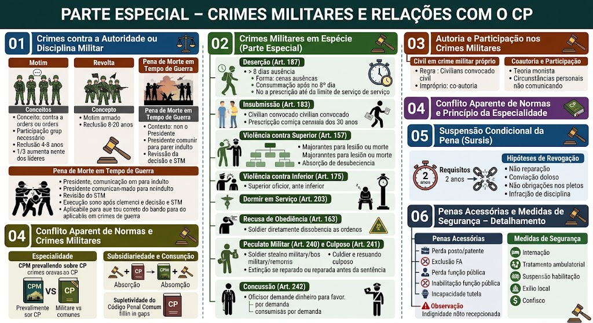

Material de estudo: Parte Especial – Motim, Revolta, Crimes em Espécie e Relações com o CP
Material complementar · Ver fonte no GitHub
Crimes contra a Autoridade ou Disciplina Militar
Motim
Ocorre quando militares se reúnem para:
- agir contra ordem de superior;
- negar-se a cumpri-la;
- agir sem ordem;
- praticar violência.
Características: crime de concurso necessário.
Pena: reclusão de 4 a 8 anos.
Aumento de Pena: os cabeças do movimento sofrem aumento de 1/3.
Também configura motim:
- Assentir em recusa conjunta de obediência;
- Assentir em resistência ou violência contra superior;
- Ocupar quartel, fortaleza, arsenal, estabelecimento militar etc.
Revolta
Conceito: motim armado.
Pena: reclusão de 8 a 20 anos.
Pena de Morte em Tempo de Guerra (aplicável aos crimes militares de guerra)
Em tempo de guerra declarada, a pena de morte pode ser aplicada por fuzilamento (art. 55 do CPM).
Rito e salvaguardas:
- O julgamento segue o rito especial do CPPM para crimes de guerra.
- A sentença condenatória é obrigatoriamente comunicada ao Presidente da República para fins de indulto ou comutação (art. 84, XXII, CF).
- O condenado tem direito à apelação necessária (obrigatória) ao Superior Tribunal Militar (STM), que revisa integralmente a decisão.
- A execução só ocorre após a negativa da clemência presidencial e o trânsito em julgado da decisão do STM.
- Aplica‑se a todos os crimes militares de guerra, inclusive traição e covardia, observado o devido processo legal.
Crimes Militares em Espécie (Parte Especial)
Deserção (Art. 187)
Conceito: ausentar-se o militar da unidade, navio ou lugar onde deve permanecer, por mais de 8 dias, ou, tendo-o feito, não se apresentar no prazo de 8 dias.
Pena: detenção de 6 meses a 2 anos.
Forma especial (Art. 188): fuga no momento da apresentação – a pena é dobrada.
Consumação: ocorre automaticamente com o decurso do 8º dia de ausência (crime formal).
Regra de prescrição (Art. 132): não prescreve enquanto o agente não atingir a idade-limite do serviço (praça: 45 anos; oficial: 60 anos).
Insubmissão (Art. 183)
Conceito: deixar de apresentar‑se o convocado, no prazo designado, para incorporação ou inspeção de saúde.
Pena: detenção de 1 a 3 anos.
Prescrição (Art. 132, §2º): inicia‑se quando o agente completa 30 anos de idade.
Sujeito ativo: civil convocado (exceção à regra de crime próprio militar).
Violência contra Superior (Art. 157)
Conceito: praticar violência contra superior hierárquico, no exercício ou em razão de sua função.
Pena: reclusão de 3 a 10 anos.
Aumento: se da violência resulta lesão corporal grave ou morte, aplicam‑se as majorantes específicas do parágrafo único.
Consunção: a desobediência (Art. 163) é absorvida pela violência, se for meio para esta.
Violência contra Inferior (Art. 175)
Conceito: praticar violência contra inferior hierárquico, em razão da função.
Pena: detenção de 6 meses a 2 anos (se apenas vias de fato). Se resulta lesão corporal, a pena é de reclusão de 2 a 6 anos.
Dormir em Serviço (Art. 203)
Conceito: dormir o militar em serviço de vigia, sentinela, ou outro que exija prontidão.
Pena: detenção de 1 a 6 meses.
Aplica‑se também ao que se afasta do posto sem ordem (art. 204, in fine).
Recusa de Obediência (Art. 163)
Conceito: recusar‑se a obedecer a ordem do superior sobre assunto relativo à serviço.
Pena: detenção de 1 a 2 anos.
Configura‑se pela recusa explícita, silêncio obstinado ou qualquer ato que denote a recusa deliberada.
Peculato Militar (Art. 240) e Culposo (Art. 241)
Peculato doloso (Art. 240): apropriar‑se, o militar, de dinheiro, valor ou bem que possui em razão do cargo. Pena: reclusão de 3 a 10 anos.
Peculato culposo (Art. 241): concorre culposamente para a apropriação. Pena: detenção de 3 meses a 1 ano.
⚠️ Extinção da punibilidade: no peculato culposo, se o agente devolve a coisa ou repara o dano antes da sentença, a punibilidade se extingue (art. 123, VI).
Concussão (Art. 242)
Conceito: exigir, para si ou para outrem, vantagem indevida, em razão da função militar.
Pena: reclusão de 3 a 8 anos.
Diferencial: no peculato há *apropriação*; na concussão há *exigência* de vantagem indevida (não necessariamente consumada a entrega).
Autoria e Participação nos Crimes Militares
Civil em crime militar próprio
Em regra, os crimes próprios (previstos exclusivamente no CPM) só podem ser praticados por militares (ex.: deserção, motim).
Exceção constitucional/legal: o civil convocado pode ser autor do crime de insubmissão (Art. 183).
Crimes impróprios (Art. 9º, II do CPM): o civil pode ser coautor ou partícipe, desde que concorra com um militar da ativa na execução do fato.
📌 Regra prática: se apenas um civil pratica a conduta típica em local sujeito à administração militar (ex.: civil invade e furta equipamento sem nenhum militar envolvido), o crime será comum (da Justiça Comum), e não militar, por ausência de sujeito ativo militar.
Coautoria e Participação em Crimes Militares
Aplica‑se a teoria monista (Art. 49 do CPM): todos respondem pela mesma infração, na medida de sua culpabilidade.
Circunstâncias pessoais (Art. 50): não se comunicam entre os agentes (ex.: reincidência de um não se comunica ao outro).
Elementos normativos do tipo (ex.: "superior hierárquico"): se o civil conhece essa condição do militar, responde pelo crime militar.
Conflito Aparente de Normas e Princípio da Especialidade
Especialidade – CPM × CP comum
O CPM é lei penal especial em relação ao Código Penal comum.
Regra: quando o mesmo fato estiver previsto em ambos os diplomas, prevalece o CPM (por especialidade).
Exemplo: lesão corporal entre militares em serviço → aplica‑se o Art. 209 do CPM, e não o Art. 129 do CP.
Conflitos com a lei comum (Lei 13.491/2017): qualquer crime comum pode ser militarizado, mas a especialidade militar prevalece sobre a justiça comum.
Subsidiariedade e Consunção (absorção)
Subsidiariedade: quando uma norma é subsidiária (crime‑meio) em relação a outra (crime‑fim), aplica‑se apenas a principal. Ex: a desobediência (Art. 163) é absorvida pela violência contra superior (Art. 157) se for meio para sua prática.
Consunção: o crime mais grave absorve os crimes menos graves que são meras fases ou formas de execução.
Concurso aparente: resolve‑se por especialidade, subsidiariedade ou consunção, sempre em favor da norma que melhor tutelar o bem jurídico militar (hierarquia e disciplina).
Supletividade do Código Penal Comum (Art. 12 do CPM)
O CPM é omisso em diversas partes (ex.: erro de tipo, imputação objetiva). Nesses casos, aplica‑se o Código Penal comum subsidiariamente, desde que compatível com a natureza militar e com os princípios do Direito Penal Militar.
Aplicam‑se, por exemplo, os arts. 13 (nexo causal), 20 (erro de tipo) e 21 (erro de proibição) do CP, mas com as peculiaridades da casuística castrense (ordem hierárquica, serviço, etc.).
Suspensão Condicional da Pena (Sursis)
Requisitos
Pena privativa de liberdade não superior a 2 anos.
Período de prova:
- Regra geral: de 2 a 4 anos.
- Maiores de 70 anos ou por razões de saúde: 4 a 6 anos.
Observação
O sursis não se estende:
- à pena acessória;
- às medidas de segurança não detentivas.
Hipóteses de Revogação
O benefício será revogado quando o condenado:
1. Não reparar o dano, sem motivo justificado.
2. For condenado, por sentença irrecorrível, por crime doloso.
3. Deixar de cumprir qualquer obrigação imposta na sentença.
4. For punido por infração disciplinar grave.
Penas Acessórias e Medidas de Segurança – Detalhamento
Perda do posto e da patente
Condenação a pena superior a 2 anos, por crime militar ou comum.
Importa também na perda das condecorações, após julgamento específico do oficial.
Declaração de incompatibilidade com o oficialato
Aplicável aos oficiais, conforme previsão legal.
Exclusão das Forças Armadas
Aplicada à praça condenada a pena superior a 2 anos.
Perda da função pública
Ainda que eletiva.
Inabilitação para o exercício de função pública
Prazo: até 20 anos.
Requisitos:
- Pena de reclusão superior a 4 anos; e
- Crime militar cometido com abuso de poder ou violação do dever militar.
Incapacidade para o exercício do poder familiar, tutela ou curatela
Suspensão dos direitos políticos.
Observação sobre a pena de indignidade para o oficialato
Apesar de ainda constar no CPM, a pena de indignidade para o oficialato não foi recepcionada pela Constituição Federal de 1988, em razão da garantia constitucional das patentes.
Internação em estabelecimento de custódia e tratamento
Aplicável ao inimputável.
Prazo:
- Mínimo: 1 a 3 anos.
- Máximo: CPM indeterminado, STF limitou a 30 anos (art. 75 do CP, aplicado subsidiariamente).
Também pode ocorrer internação em seção especial de estabelecimento prisional.
Medidas Não Detentivas (complemento)
Tratamento ambulatorial.
Suspensão da habilitação para dirigir veículos – aplicável ao condenado por crime relacionado à direção de veículo. Prazo mínimo: 1 ano.
Exílio local – proibição de permanecer ou residir no município, comarca ou localidade onde o crime foi praticado.
Proibição de frequentar determinados lugares – prazo mínimo: 1 ano.
Medidas de Segurança Patrimoniais (complemento)
Interdição de estabelecimento ou sede – prazo: mínimo 15 dias, máximo 6 meses.
Confisco – perda dos instrumentos e produtos do crime.
Mapa-mental
